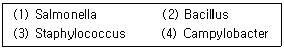
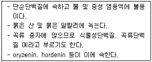
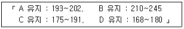

식품산업기사 (2015-03-08 기출문제)
1과목: 식품위생학
1. 바퀴벌레에 대한 설명으로 옳은 것은?
- 완전변태를 한다.
- 알에서 성충이 될 때까지 1주일 정도가 소요된다.
- 성충의 수명은 보통 5년 이상이다.
- 야행성으로 군거생활을 한다.
(정답률: 85%)

2. 아플라톡신의 특성이 아닌 것은?
- 열에 매우 안정한 단순단백질이다.
- B1은 간독소로서 가장 강력하다.
- 발암성을 나타낸다.
- Aspergillus flavus에 의해 생성된다.
(정답률: 78%)
3. 식품위생법에서 규정하는 식품의 정의에 맞는 것은?
- 모든 음식물
- 의약품을 제외한 모든 음식물
- 의약품을 포함한 모든 음식물
- 식품과 첨가물
(정답률: 90%)
4. 식품첨가물로서 사용이 금지된 감미료는?
- D-sorbitol
- disodium glycyrrhizinate
- cyclamate
- aspartame
(정답률: 71%)
5. 경미한 경우에는 발열, 두통, 구토 등을 나타내지만 종종 패혈증이나 뇌수막염, 정신착란 및 혼수상태에 빠질 수 있다. 연질치즈 등이 자주 관련되며, 저온에서는 성장이 가능한 균으로서 특히 태어나 신생아의 미숙 사망이나 합병증을 유발하기도 하여 치명적인 식중독 원인균은?
- Vibrio vulnificus
- Listeria monocytogenes
- CI. botulinum
- E. coli 0157:H7
(정답률: 82%)
6. 인수(축)공통감염병의 원인 세균과 거리가 먼 것은?
- 결핵균
- 브루셀라균
- 탄저균
- 디프테리아
(정답률: 69%)
7. 산화방지제에 대한 설명으로 옳은 것은?
- 플라스틱 가공을 원할히 진행시키며 프탈산 에스테르계가 있다.
- 치아염소산나트륨이 주로 사용한다.
- 페놀류인 부틸히드록시아니졸(BHA)등의 화합물이 산화에 의한 변화를 방지한다.
- 비타민E는 사용할 수 없다.
(정답률: 70%)
8. 경구감염병에 대한 설명으로 옳은 것은?
- 발병은 섭취한 사람으로 끝난다.
- 잠복기가 짧아 일반적으로 시간 단위로 표시한다.
- 면역성이 없다.
- 병원균이 독력이 강하여 소량의 균에 의하여 발병이 가능하다.
(정답률: 77%)
9. 다음 중 가장 흔히 쓰이는 지시미생물인 대장균군에 속하지 않는 미생물은?
- Streptococcus spp.
- Enterobacter spp.
- Klebsiella spp.
- Citrobacter spp.
(정답률: 55%)
10. Clostridium botulinum 의 특성이 아닌 것은?
- 식중독 감염시 현기증, 두통, 신경장애 등이 나타난다.
- 호기성의 그램 음성균이다.
- A형 균은 채소, 과일 및 육류와 관계가 깊다.
- 불충분하게 살균된 통조림 속에 번식하는 간균이다.
(정답률: 87%)
11. 만약 감자를 자른 다음 시간이 경과하고 끓인 후, 6시간 정도 보관 후에 섭취하여 식중독이 발생하였다면 이때 발견될 가능성이 높은 식중독균을 보기에서 모두 고른 것은?

- (1), (2)
- (1), (3)
- (2), (3)
- (2), (4)
(정답률: 73%)
12. 식품 제조 공정 중 거품이 많이 날 때 소포의 목적으로 사용하는 첨가물은?
- 규소수지
- n-헥산
- 규조토
- 유동파라핀
(정답률: 80%)
13. 황색포도상구균 식중독에 대한 설명으로 거리가 먼 것은?
- 잠복기가 1~6시간으로 짧다.
- 사망률이 매우 높다.
- 내열성이 강한 장내독소(enterotoxin)에 의한 식중독이다.
- 주 증상은 급성위장염으로 인한 구토, 설사이다.
(정답률: 79%)
14. D-Sorbitol에 대한 설명으로 틀린 것은?
- 당도가 설탕의 약 절반 정도인 감미료이다.
- 상업적으로 이용하기 위해서 포도당으로부터 화학적으로 합성한다.
- 다른 당알콜류와 달리 생체 내에서 중단대사산물로 존재하지 않는다.
- 묽은 산·알칼리 및 식품의 조리온도에서도 안정하다.
(정답률: 63%)
15. 다음 중 황변미 식중독의 원인독소가 아닌 것은?
- aflatoxin
- citrinin
- islanditoxin
- luteoskyrin
(정답률: 60%)
16. 제1군 법정감영병이 아닌 것은?
- 세균성이질
- 장티푸스
- 콜레라
- 폴리오
(정답률: 78%)
17. bisphenol A가 주로 용출되는 재질은?
- PS(polystyrene)수지
- PVC필름
- phenol 수지
- PC(polycarbonate) 수지
(정답률: 55%)
18. 포름알데히드 용출과 관련이 없는 합성수지는?
- 페놀수지
- 요소수지
- 멜라민수지
- 염화비닐수지
(정답률: 67%)
19. 인수공통감염병으로 동물에게는 유산, 사람에게 열병을 일으키는 것은?
- 탄저
- 파상열
- 돈단독
- 큐열
(정답률: 83%)
20. 미생물 검사용 검체의 운반 시 부패 및 변질의 우려가 있는 검체는 몇 시간 이내에 검사기관에 운반하여야 하는가?
- 4시간 이내
- 8시간 이내
- 12시간 이내
- 24시간 이내
(정답률: 74%)
2과목: 식품화학
21. 다음 유화제가 가진 기능기 중 소수성기는?
- -OH
- -COOH
- -NH2
- CH3-CH2-CH2-
(정답률: 66%)
22. 외부의 힘에 의하여 변형된 물체가 그 힘이 제거되었을 때 원상태로 되돌아가려는 성질은?
- 탄성(elasticity)
- 소성(plasticity)
- 점탄성(viscoelasticity)
- 점성(viscosity)
(정답률: 81%)
23. 다음 중 동물성 스테롤(sterol)은?
- cholesterol
- ergosterol
- sitosterol
- stigmasterol
(정답률: 83%)
24. 다음 중 인체에 유해한 dipeptide인 lysinoalanine이 형성되는 경우가 아닌 것은?
- 유지의 장시간 가열
- 식물성 단백질의 알칼리 추출과정
- 육류의 가열 조리
- 달갈의 가열
(정답률: 45%)
25. 찹쌀과 멥쌀의 끈기의 차이를 설명한 것 중 가장 옳은 것은?
- 찹쌀에는 아밀로펙틴이 많고 아밀로오스가 적게 있다.
- 찹쌀에는 아밀로오스가 많고 멥쌀에는 아밀로펙틴이 적게 있다.
- 찹쌀과 멥쌀에는 아밀로오스와 아밀로펙틴이 동량 들어 있다.
- 찹쌀과 멥쌀의 끈기는 아밀로오스나 아미로펙틴의 함량과 관계없다.
(정답률: 79%)
26. 유지 1g중에 존재하는 유리 지방산을 중화하는데 소요되는 KOH의 mg수로 표시되는 값은?
- 산가(scid value)
- 과산화물가(peroxide value)
- 요오드가(iodine value)
- 아세틸가(acetyl value)
(정답률: 61%)
27. 토코페롤의 설명에 맞지 않는 것은?
- 산화방지제로 사용된다.
- 식물성 식품보다 동물성 식품에 많다.
- 지용성 비타민이다.
- 여러 가지 이성체가 있다.
(정답률: 76%)
28. 떫은 맛과 관련된 주 페놀(phenol)성 물질을 연결한 것 중 옳은 것은?
- 다엽 – chlorogenic acid
- 감 - shibuol
- 밤속껍질 - theanine
- 커피 – catechin
(정답률: 68%)
29. 약한 산이나 알칼리에 의해 파괴되지 않으며, 그 색깔도 변색하지 않는 식품은?
- 검정콩
- 당근
- 가지
- 옥수수
(정답률: 78%)
30. 지방 100g 중에 oleic acid 20mg 이 함유되어 있을 경우의 산가는? (단, KOH의 분자량은 56이고, oleic acid C18H34O2의 분자량은 282이다.)
- 3.97
- 0.0397
- 100.7
- 1.007
(정답률: 50%)
31. 전분의 노화를 억제하는 방법으로 적합하지 않은 것은?
- 수분함량의 조절
- 냉장 방법
- 설탕의 첨가
- 유화제 사용
(정답률: 75%)
32. 다음 중 식품의 점성에 영향을 미치는 인자로 가장 거리가 먼 것은?
- 온도
- 농도
- 분자량
- 탁도
(정답률: 67%)
33. 다음 중 육류가 저장 중에 갈색으로 변색되었을 때, 그 형태는 어떤 것인가?
- myglobin
- oxymyglobin
- metmyoglobin
- nitrosomyoglobin
(정답률: 71%)
34. 다음에서 설명하는 단백질은?

- globulin
- histone
- albumin
- glutelin
(정답률: 62%)
35. 호화전분(α전분)에 대한 설명 중 틀린 것은?
- 생전분의 미셀(micelle)구조가 파괴된 것이다.
- 물을 급히 흡수하고 팽윤한다.
- 전분분해 효소의 작용이 쉽다.
- 냉수에 녹이면 곧 호정화된다.
(정답률: 77%)
36. 지용성 비타민의 운반체로 적절한 것은?
- 당질
- 지질
- 단백질
- 무기질
(정답률: 69%)
37. 쇠고기의 붉은 색깔은 무슨 색소에 의하여 나타나는가?
- 안토시안(anthocyan)
- 카로틴(carotene)
- 미오글로빈(myoglobin)
- 플라본(falvone)
(정답률: 91%)
38. 다음은 4가지 식용유지의 검화가 중 유지를 구성하는 지방산의 평균 분자량이 가장 큰 것은?

- A유지
- B유지
- C유지
- D유지
(정답률: 64%)
39. 닌히드린 반응(ninhydrin reaction)이 이용되는 것은?
- 아미노산의 정성
- 지방질의 정성
- 탄수화물의 정성
- 비타민의 정성
(정답률: 88%)
40. 다음 조효소(coenzyme) 중 아데닌(adenine)을 포함하지 않는 것은?
- coenzyme A
- thiamine pyrophosphate
- FAD
- S-adenosylmthionine
(정답률: 50%)
3과목: 식품가공학
41. 식물성 유지가 동물성 유지보다 산패가 덜 일어나는 이유로 적합한 것은?
- 천연항산화제가 들어있기 때문에
- 발연점이 낮기 때문에
- 시너지스트(synergist)가 없기 때문에
- 열에 안정하기 때문에
(정답률: 89%)
42. 난황계수가 0.42이고 난황의 폭이 3.5cm일 때 난황의 높이와 신선도의 판별결과는?
- 높이 0.147cm 이고, 부패란이다.
- 높이 0.83cm 이고, 신선란이다.
- 높이 1.47cm 이고, 신선란이다.
- 높이 0.83cm 이고, 부패란이다.
(정답률: 77%)
43. 축육을 도살하기 전에 조치해야 할 사항이 아닌 것은?
- 도살전의 급수
- 도살전의 안정
- 도살전의 급식
- 도살전의 위생적인 검사
(정답률: 81%)
44. 과일 통조림 제조시 탈기를 하는 이유가 아닌 것은?
- 호기성 세균 및 곰팡이의 발육을 억제하기 위하여
- 산소를 제거하여 통 내면의 부식과 내용물의 변화를 적게 하기 위하여
- 용기 속에 미생물과 공기가 들어가는 것을 막고 진공도를 유지하기 위하여
- 가열 살균할 때 내용물이 너무 지나치게 팽창하여 통이 터지는 것을 방지하기 위하여
(정답률: 48%)
45. 다음 중 7분도미의 도정률을 약 몇 % 인가?
- 100
- 97
- 94
- 91
(정답률: 77%)
46. 떫은 감을 떫지 않게 하는 과정인 탈삽방법에 해당하지 않는 것은?
- 탄산가스법
- 알코올법
- 온탕법
- 알데히드법
(정답률: 45%)
47. 아이스크림에서 유지방의 주된 기능은?
- 냉동효과를 증진시킨다.
- 얼음이 성장하는 성질을 개선한다.
- 풍미를 진하게 한다.
- 아이스크림의 저장성을 좋게 한다.
(정답률: 75%)
48. 일반적인 달걀의 구성이 아닌 것은?
- 난각
- 난황
- 난백
- 기공
(정답률: 90%)
49. 과실의 젤리화 특성요소에서 펙틴과 산의 함량이 모두 높은 것은?
- 복숭아, 앵두
- 복숭아, 딸기
- 살구, 딸기
- 사과, 포도
(정답률: 74%)
50. 동물성 유지의 채유에 가장 알맞은 방법은?
- 용출법
- 압착법
- 타정법
- 여과법
(정답률: 75%)
51. 육류의 연화제와 가장 거리가 먼 것은?
- 파파인(papain)
- 피신(ficin)
- 브로멜라인(bromelain)
- 리파아제(lipase)
(정답률: 74%)
52. 수산물 통조림의 관내기압은 43.2cmHg이고 관외기압이 75.0cmHg일 때 통조림의 진공도는?
- 12.5cmHg
- 31.8cmHg
- 118.2cmHg
- 44.3cmHg
(정답률: 68%)
53. 치즈(cheese) 제조 시 렌넷(rennet)을 이용하는 목적으로 가장 옳은 것은?
- 지방의 산화 방지
- 유단백질의 균질
- 유단백질 응고
- 유지방 환원
(정답률: 78%)
54. 청국장은 찐콩에 어떤 발효 미생물을 번식시켜 만드는가?
- Aspergillis oryzae
- Lactobacillus lactis
- Basillus natto
- Saccharomyces aureus
(정답률: 85%)
55. 버터의 일반적인 제조 공정으로 가장 옳은 것은?
- 원료유→크림 분리→크림 중화→크림 살균→교동→연압
- 원료유→크림 분리→크림 살균→크림 중화→연압→교동
- 원료유→크림 분리→크림 살균→연압→크림 중화→교동
- 원료유→크림 분리→크림 중화→크림 살균→연압→교동
(정답률: 54%)
56. 마요네즈 제조에 있어 난황의 주된 작용은?
- 응고제 작용
- 유화제 작용
- 기포제 작용
- 팽창제 작용
(정답률: 86%)
57. 두유를 제조할 때 콩 비린내를 없애는 방법과 거리가 먼 것은?
- 100℃의 열수에 침지한 후 마쇄하는 열수침지법
- 5℃ 이하의 냉수에 30분간 침지한 후 마쇄하는 냉수침지법
- 60℃ 의 가성소다에 2시간 침지시킨 후 열수와 함께 마쇄하는 알칼리침지법
- 충분히 수침한 콩을 고온의 스팀으로 찌는 증자법
(정답률: 63%)
58. 아밀로오스 분자의 비환원성 말단에 작용하여 전분을 엿당단위로 가수분해하는 효소는?
- α-amylase
- β-amylase
- glucoamylase
- glucose isomerase
(정답률: 71%)
59. 토마토 가공제품 중 토마토 케첩에 대한 설명으로 옳은 것은?
- 토마토 과육과 액즙을 농축한 것
- 토마토 퓌레를 더 농축해서 전체 고형물 함량을 25% 이상으로 한 것
- 토마토 또는 토마토 농축물을 주원료로 하여 당류, 식초, 식염, 향신료, 구연산 등을 가하여 제조한 것
- 토마토 과육을 곱게 갈아 여과한 후 소금으로 조미한 것
(정답률: 82%)
60. 육제품의 훈연의 목적이 아닌 것은?
- 방부작용에 의한 저장성 증가
- 항산화작용에 의한 산화방지
- 훈연취 부여에 의한 풍미의 개선
- 훈연에 의한 수분증발로 육질이 질겨짐
(정답률: 87%)
4과목: 식품미생물학
61. 미생물 대사 중 pyruvic acid가 TCA cycle로 들어갈 때 어떤 형태로 전환되는가?
- acetyl CoA
- NADP
- FAD
- ATP
(정답률: 80%)
62. 세균 포자의 특징은?
- 영양세포를 말한다.
- 열저항성이 아주 낮다.
- 방사선 저항성이 아주 낮다.
- dipicolonic acid를 함유하고 있다.
(정답률: 55%)
63. 부패한 통조림에서 발견되며, 포자를 형성하는 그람 양성의 혐기성균으로, catalase시험시 음성으로 판정되는 균은?
- Bacillus 속
- Lactobacillus 속
- Clostridium 속
- Pseudomonas 속
(정답률: 88%)
64. 세포막에 대한 설명으로 틀린 것은?(오류 신고가 접수된 문제입니다. 반드시 정답과 해설을 확인하시기 바랍니다.)
- 견고한 벽으로 세포 형태를 유지한다.
- 원형질막이라고도 하며, 물질의 이동을 통제한다.
- 선택적 투과성 막으로 삼투압을 조절한다.
- 주로 단백질과 지질로 구성되어 있다.
(정답률: 36%)
65. 감귤의 쓴맛을 분해하는 효소는?
- invertase
- naringinase
- hemicelluslase
- pectinase
(정답률: 68%)
66. 김치 숙성에 주로 관계되는 균은?
- 고초균
- 대장균
- 젖산균
- 황국균
(정답률: 92%)
67. 효소의 정제법에 해당하지 않는 것은?
- 염석 및 투석
- 젤(gel) 여과법
- 라이소자임(lysozyme) 처리법
- 이온교환 크로마토그래피(cyronatography)
(정답률: 51%)
68. 간장 및 된장 제조시 콩에 곰팡이와 세균을 번식시켜 만든 메주의 사용목적은?
- 메주의 부패 방지
- 제품의 독특한 향기와 맛을 생성
- 단백질 분해효소 등의 효소 생성
- 간장의 착색
(정답률: 74%)
69. 효소 지마아제(Zymase)의 작용은?
- 주정을 산화시킨다.
- 단당류로부터 주정발효를 일으킨다.
- 포도당을 산화해서 수산을 만든다.
- 맥아당을 분해한다.
(정답률: 66%)
70. “C6H12O6 + O2 → CH3COOH + H2O” 에 의해 에탄올(ethanol) 100g에서 생성될 수 있는 초산(acetic acid)의 이론 생성량은?
- 130.4g
- 13.4g
- 111.4g
- 11.4g
(정답률: 60%)
71. 액체 배지에서 초산균의 특징은?
- 균막을 형성하고 혐기성이다.
- 균막을 형성하고 호기성이다.
- 균막을 형성하지 않으며 혐기성이다.
- 균막을 형성하지 않으며 호기성이다.
(정답률: 65%)
72. 식용버섯의 성분 중 감미성분은?
- trehalose
- aspartic acid
- glutamine
- citric acid
(정답률: 54%)
73. 건조 중 외부환경이 열악할 때 세포를 보호하기 위하여 세포막외측을 둘러싸는 점질층이 단단하게 형성된 것을 무엇이라 하는가?
- 리보솜
- 세포벽
- 협막
- 선모
(정답률: 57%)
74. 다음 중 구연산 발효에 대한 설명으로 거리가 먼 것은?
- 발효중의 pH는 2~3이 좋다.
- 구연산 합성효소의 활성이 증가한다.
- 당질을 원료로 하였을 때 우수한 생산균은 거의 곰팡이 이다.
- 혐기상태에서 발효해서 생성한다.
(정답률: 52%)
75. 맥주 제조시 첨가되는 호프(hop)의 효과로 거리가 먼 것은?
- 맥주 특유의 향미를 부여한다.
- 저장성을 높인다.
- 맥주의 거품 발생에 관계한다.
- 효모의 증식을 촉진시켜 알코올 농도를 높인다.
(정답률: 61%)
76. 육류의 표면을 착색시키는 세균과 색깔이 가장 옳게 연결된 것은?
- Serratia marcescens - 적색
- Pseudomonas fluorescens - 청색
- Staphylococcus aureus - 녹색
- Micrococcus varians – 흑색
(정답률: 60%)
77. 통조림 변패와 관련된 고온성 포자형성균이 바르게 연결된 것은?
- TA(thermophilic anaerobe)변패 – Clostridium butyricum
- ropiness변패 – Bacillus anthracis
- 황화물변패 – Clostridium pasteurianum
- flat sour 변패 – Bacillus coagulans
(정답률: 60%)
78. 종초(種醋)를 선택하는 일반적인 조건이 아닌 것은?
- 초산이외의 유기산류나 향기성분인 ester류를 생성한다.
- 초산을 다시 산화(과산화)분해 하여야 한다.
- 알코올에 대한 내성이 강해야 한다.
- 초산 생성속도가 빨라야 한다.
(정답률: 60%)
79. 당류로부터 젖산만을 형성하는 정상발효젖산균과 가장 거리가 먼 것은?
- Streptococcus lactis
- Leuconostoc mesenteroides
- Lactobacillus bulgaricus
- Lactobacillus plantarum
(정답률: 62%)
80. 병행복발효주에 해당하지 않는 것은?
- 청주
- 맥주
- 탁주
- 약주
(정답률: 77%)
5과목: 식품제조공정
81. 혼합 방법 중 마요네즈와 같이, 섞이지 않는 액체와 액체의 혼합을 뜻하는 것은?
- 청징
- 반죽
- 유화
- 혼합
(정답률: 85%)
82. 밀제분 시 원료 밀을 롤로(roller)를 사용하여 부수면서 배유부외 외피를 분리하는 공정은?
- 가수공정
- 순화공정
- 훈증공정
- 조쇄공정
(정답률: 88%)
83. 다음 중 분무건조(spray drying)장치의 구성 부분이 아닌 것은?
- 액체가열장치
- 원액분무장치
- 건조장치
- 제품회수장치
(정답률: 52%)
84. 식품원료를 충격력 원리로 분쇄하여 곡물의 분쇄, 제분작업, 사료의 조제에 이용되는 분쇄기는?
- 롤밀(roll mill)
- 버밀(burr mill)
- 디스키밀(disc mill)
- 해머밀(hanmmer mill)
(정답률: 84%)
85. 액체원료나 고체원료에 포함되어 있는 유효성분을 용매에 녹여 분리하는 조작은?
- 건조
- 유화
- 추출
- 여과
(정답률: 68%)
86. 식품의 압출장치에서 바렐(Barrel) 내부에 걸리는 압력 생성 원인과 거리가 먼 것은?
- 스크류의 길이
- 스크류 지름의 증가와 스크류 Pitch의 감소
- 배럴(barrel) 직경의 감소
- 스크류에 제한 날개(Restriction Flight)의 부착
(정답률: 55%)
87. 다음 중 식품건조 중의 화학적 변화가 아닌 것은?
- 갈변 현상 및 색소 파괴
- 단백질 변성 및 아미노산 파괴
- 가용성 물질의 이동
- 지방의 산화
(정답률: 70%)
88. 다음 중 Q10. 값에 대한 설명으로 옳은 것은?
- 통조림의 냉점이 살균온도에 도달하는 시간
- 일정한 온도로 가열할 때 생균수가 사멸되어 1/10로 감소하는데 걸리는 시간
- 열처리 온도가 10℃ 상승함에 따라서 반응 속도의 변화값을 나타낸 것
- 일정한 온도에서 세균 또는 세균포자를 사멸시키는데 필요한 가열치사시간
(정답률: 69%)
89. 다음 중 체의 눈이 가장 큰 것은?
- 30 메쉬
- 60 메쉬
- 120 메쉬
- 200 메쉬
(정답률: 83%)
90. 초음파 세척에 가장 적합하지 않은 것은?
- 오염된 정밀 기계 부품
- 과일에 묻은 그리스(grease)
- 계란 표면에 묻은 오염물
- 곡류 낟알에 포함된 지푸라기
(정답률: 72%)
91. 다음 중 막분리의 장점이 아닌 것은?
- 연속 조작이 가능
- 설치비가 저렴
- 영양성분의 손실 최소화
- 에너지 절약
(정답률: 63%)
92. 우유, 맥주, 과일주스의 살균방법인 저온살균법에 대한 설명 중 옳은 것은?
- 120℃에서 20분간 실시한다.
- 100℃에서 20분간 실시한다.
- 65℃에서 30분간 실시한다.
- 50℃에서 30분간 실시한다.
(정답률: 82%)
93. 판형 열교환기(plate type heat exchanger)는 스테인리스 강판을 프레스하여 물결형태로 홈을 만들어 여러장 조립한 것으로 이 열교환기의 특징과 거리가 먼 것은?
- 총괄열전달 계수가 크다.
- 짧은 시간에 고온가열이 가능하다.
- 장치의 크기에 비해 좁은 면적에 설치가능하다.
- 고점도물의 열전달이 우수하다.
(정답률: 44%)
94. 다음 중 통조림 가공공장에서 통조림의 직접적인 살균에 관여하는 기계로 옳은 것은?
- 레토르트(retort)
- 밀봉기(seamer)
- 탈기함(exhaust box)
- 진공펌프(vacuum pump)
(정답률: 76%)
95. 회전속도를 동일하게 유지할 때, 원심분리기 로터(rotor)의 반지름을 2배로 늘리면 원심효과는 몇 배가 되는가?
- 0.25배
- 0.5배
- 2배
- 4배
(정답률: 62%)
96. 교반 속도가 빠른 액체 혼합기에서 방해판(baffle)이 하는 주된 역할은?
- 소용돌이를 완화하여 내용물이 넘치지 않도록 한다.
- 교반에 필요한 에너지의 소비를 줄여준다.
- 회전속도를 높여준다.
- 열방샐으로 내용물의 점도를 낮춰준다.
(정답률: 84%)
97. 살균공정 중 어느 일정온도에서 일정농도의 미생물을 완전히 사멸시키는데 필요한 시간을 나타내는 값은?
- Z 값
- D 값
- F 값
- SV 값
(정답률: 58%)
98. 식품 중의 일부 수분을 제거하여 용액의 농도를 높여주는 농축공정에 속하지 않는 것은?
- 막농축
- 분무농축
- 동결농축
- 증발농축
(정답률: 50%)
99. 통조림 살균법으로 가장 많이 쓰이는 방법은?
- 건열살균법
- 가압증기 가열살균법
- 방사선살균법
- 전기살균법
(정답률: 82%)
100. 여과기 바닥에 다공판을 깔고 모래나 입자 형태의 여과재를 채운 구조로, 여과층에 원액을 통과시켜 여맥을 회수하는 장치는?
- 가압 여과기
- 원심 여과기
- 중력 여과기
- 진공 여과기
(정답률: 77%)